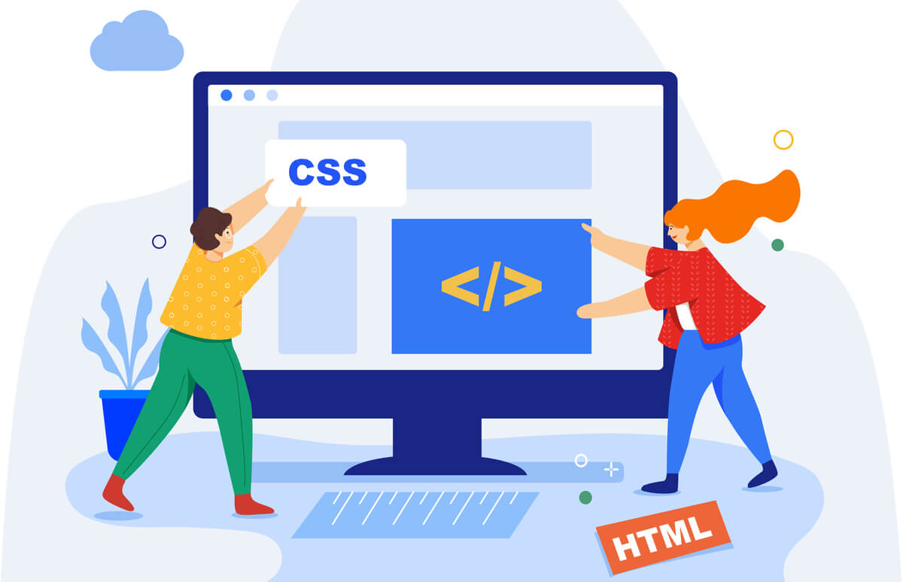

الاسم: أميرة السيد السعيد الغرباوي
الرقم الجامعي: 2501853
في البداية، عندما ندخل على أي موقع على الإنترنت مثل مواقع التواصل أو المتاجر الإلكترونية، أول شيء يلفت انتباهنا هو شكل الموقع: ألوانه، ترتيب الأزرار، والخطوط المستعملة. كل هذه الأشياء هي التي تجعل التصفح مريحاً وسهلاً بالنسبة لنا كزوّار.
في عالم برمجة الويب، لغة HTML هي التي تبني الهيكل الأساسي للصفحة (مثل العظام في الجسم)، لكن هذا الهيكل يكون شكلاً بدائياً جداً وغير جذاب بدون ألوان أو تنسيق. وهنا يأتي دور لغة CSS، فهي المسؤولة عن إضافة اللمسات الجمالية وتنسيق الأشكال والألوان، لكي تظهر الصفحة بشكل جميل ومنظم للمستخدم.
لغة CSS هي اختصار لـ Cascading Style Sheets أو ما نسميها بلغة أنماط التنسيق. هي ليست لغة برمجة معقدة تقوم بحسابات، بل هي لغة "تنسيقية" تُستخدم لتحديد طريقة عرض العناصر المكتوبة بلغة HTML على الشاشة.
تعتمد CSS على فكرة بسيطة جداً وهي: "الاستهداف ثم التغيير". بمعنى أننا نحدد العنصر الذي نريد تغييره في الصفحة، ثم نطلب من البرنامج أن يغير شكله أو لونه.
مثال بسيط للتوضيح: لو عندنا عنوان في الصفحة مكتوب بلغة HTML، نقوم باستخدام CSS لنقول للكمبيوتر: "اجعل هذا العنوان باللون الأزرق، واجعل حجم الخط كبيراً، وضعه في منتصف الصفحة".
تلعب لغة CSS دوراً كبيراً ومحورياً في تطوير المنصات الإلكترونية، ومن أهم أدوارها:

لتوضيح الفكرة، تخيل أن لدينا زر تسجيل دخول في متجر إلكتروني:
| وجه المقارنة | بدون CSS (HTML فقط) | بعد إضافة CSS |
|---|---|---|
| الشكل | مربع أبيض صغير بدائي في زاوية الشاشة | مربع جذاب بزوايا منحنية |
| اللون | رمادي/أبيض افتراضي | أزرق جذاب |
| الخط | خط عادي صغير | خط أبيض واضح |
| التفاعل | لا يوجد | يتحرك بشكل خفيف عند الضغط عليه |
في ختام هذا التقرير، نستنتج أن لغة CSS هي الركن الأساسي الذي يعطي للمواقع إحساسها بالجمال والترتيب. فبدونها كانت شبكة الإنترنت ستكون مجرد صفحات نصية بيضاء وسوداء مملة. ومن خلال فهم أساسيات هذه اللغة، ندرك كيف يتم بناء المنصات الإلكترونية الحديثة التي نستخدمها كل يوم بشغف وسهولة.